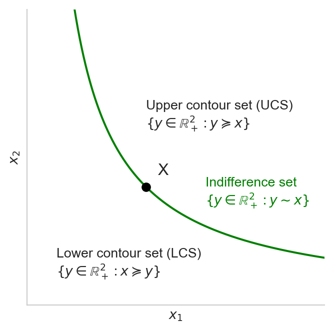
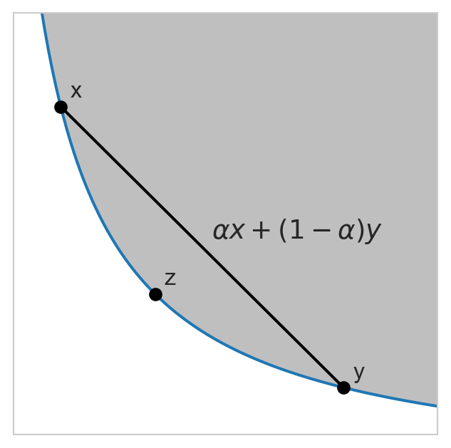

Chapter 1. Consumers and demand
1 Consumer preferences
1.1 Bundles
In economics, a bundle is a list or a vector of quantities of goods and services. In an \(n\)-good economy, each bundle \(x\) is an element of \(\mathbb{R}^n\). In the example below, the consumption bundle of Alex is \(x_A = (1, 1.5)\). If we know the prices of these goods in the economy, we can calculate the cost of his consumption as the dot product of the price vector and the consumption bundle. In addition, if we know his income, we can express his budget constraint mathematically as: \(p\cdot x_A \leq I_A\), where \(p\) is the price vector and \(I_A\) is Alex’s income.
1.2 The preference relation
Learning about preferences for bundles is essentially learning about how individuals compare bundles. Let us have a look at some key properties of the preference relation, namely: reflexivity, completeness, transitivity, continuity, monotonicity and (local) nonsasiation.
1.2.1 Notations
Before discussing these properties, let us fix the notations. Let \(x\) and \(y\) be two consumption bundles (or alternatives) in the set \(X \subset \mathbb{R}^n\) (the set of alternatives or the choice set). Then for some individual \(i\):
| Preference | Notation |
|---|---|
| \(i\) weakly prefers \(x\) over \(y\) | \(x \succeq_i y\) |
| \(i\) strictly prefers \(x\) over \(y\) | \(x \succ_i y\) |
| \(i\) is indifferent between \(x\) and \(y\) | \(x \sim_i y\) |
When it is clear from context that we will eliminate the letter \(i\) from the notations. Note that the equivalence relation \(\sim\) simply means that \(x\succeq y\) and \(y\succeq x\) . We also refer to the preference relation \(\succeq\) as the weak preference relation, as opposed to the strict preference relation \(\succ\).
To facilitate comparison, we shall also fix the following notations:
| Notation | Meaning |
|---|---|
| \(x \geq y\) | \(x_j \geq y_j\) for all good \(j=1,2, \dots, n\). |
| \(x \gt y\) | \(x_j > y_j\) for all good \(j=1,2, \cdots, n\). |
For example we typically assume that goods’ prices are strictly positive \(p\gg 0\), which we sometimes write \(p \in \mathbb{R}^n_{++}\). The notation \(x\ge y\) means that the quantity of each good in \(x\) is at least as much as that in \(y\), whereas \(x\gt y\) means that \(x\) has strictly more of every good than \(y\). The former permits \(x=y\) but the latter does not.
1.2.2 Reflexivity
A preference relation satisfies reflexivity if it any alternative is weakly preferred to itself, i.e., \(x \succeq x\) for any \(x\in X\).
1.2.3 Completeness
A preference relation over the set of alternatives \(X\) is complete if for any \(x\) and \(y\) in \(X\), either \(x \succeq y\), \(y \succeq x\), or both (\(x \sim y\)). Observe that a strict preference of \(y\) over \(x\) would be equivalent to \(x \succeq y\) and \(y \not\succeq x\).
Intuitively completeness conveys the property that one can rank any two alternatives; it is not possible to answer “I don’t know” when ask to make a comparison between two bundles.
1.2.4 Transitivity
Let \(A\), \(B\) and \(C\) be three alternatives. A preference relation is said to be transitive if:
\[ A \succeq B \text{ and } B \succeq C \implies A \succeq C. \tag{1}\]
Preferences that are both complete and transitive are said to be rational.
Condition Equation 1 might seem obvious at first sight, but evidence of intransitivity is rather prevalent. One of the most remarkable reasons for intransitivity is framing, the idea that ranking of preferences depends on the context. For example, one might prefer a mango to an avocado when thinking of them as fruits, but might prefer an avocado to a mango when thinking of making a salad. Other causes of intransitivity include cognitive difficulty when comparing close alternatives, or when each alternative involves multiple criteria (see textbook for details).
1.2.5 Monotonicity
Consider two alternatives \(A\) and \(B\) in \(X\subset \mathbb{R}^n\). We say that the preference relation \(\succeq\) satisfies monotonicity if the following conditions are satisfied:
\[ \begin{aligned} A \geq B \text{ and } a_k \neq b_k \text{ for some } k &\implies A \succeq B, \\ A \gt B &\implies A \succ B. \end{aligned} \tag{2}\]
A preference relation is said to satisfy strict monotonicity if:
\[ A \geq B \text{ and } a_k \neq b_k \text{ for some } k \implies A \succ B. \tag{3}\]
Strict monotonicity implies that we cannot have bads in the bundle. Monotonicity implies that we cannot have all bads in the bundle, otherwise \(A>B\) would imply the contrary. Note that a bad, as opposed to a good, is something we dislike (for e.g., trash); we pay to acquire a good, but to get rid of a bad.
1.2.6 Nonsatiation and local nonsatiation
1.2.6.1 Nonsatiation
A preference relation satisfies nonsatiation (NS) if for every bundle, there exists a strictly preferred bundle. Let \(X\) be the set of all alternatives or bundles, then NS implies that for any \(A\in X\) there exists \(B\in X\) such that:
\[B \succ A\]
Remark 1.
- NS allows some of the items in the bundle to be bads
- NS implies that the consumer can always find something strictly better (no best bundle)
1.2.6.2 Local nonsatiation
On the other hand, a preference relation satisfies local nonsatiation (LNS) if for every bundle there exists in strictly preferred bundle within any \(\epsilon\)-distance from it (i.e. \(B \in N_{\epsilon} A\) for all \(\epsilon > 0\)). Mathematically,
\[ \forall A \in X,\: \forall \epsilon > 0: \: \exists B \in N_{\epsilon} A \text{ s.t. } B \succ A. \tag{4}\]
Remark 2.
- LNS rules out thick indifference curves
- LNS is stricter than NS; in the former a better bundle must be found in any arbitrarily close alternative whereas in the latter it could be any other bundle in the choice set.
1.2.7 Relationships between properties
Here is a quick summary of the relationships between monotonicity, SM, NS, LNS:
\[ \begin{aligned} \text{S.Monotonicity } &\Rightarrow \text{ Monotonicity } \Rightarrow \text{ LNS} \Rightarrow \text{ NS} \\ \text{NS } &\nRightarrow \text{LNS } \nRightarrow \text{ Monotonicity} \nRightarrow \text{ S.Monotonicity} \end{aligned} \]
1.2.8 Continuity
Continuity (together with rationality) is needed to guarantee a utility representation of a preference relation.
A preference relation defined on the set of alternatives \(X\) is continuous if it is preserved under limits.
- For any sequence \(\{(x^n, y^n)\}_{n=1}^{\infty}\) with \(x^n \succeq y^n\) for all \(n\) and \(\lim_{n\to\infty} x^n = x\) and \(\lim_{n\to\infty} y^n = y\), it holds \(x \succeq y\).
Intuitively, continuous preferences mean that there can be no sudden jumps (preference reversals) in an individual preference over a sequence of bundles
Example of violation of continuity: lexicographic preferences (See exercise)
1.3 Utility functions
Utility was first used in the context of economics by Jeremy Bentham (1748-1832) as a measure of pleasure, happiness or satisfaction derived from the consumption of goods and services.
The utility function was first introduced by the Swiss mathematician Daniel Bernoulli (1700-1782) in the context of probability (gambling) to account for the St. Petersburg paradox
Theorem 1 (Existence) If a preference relation \(\succeq\) is rational (complete and transitive) and continuous on the set of alternatives \(X\subset \mathbb{R}^n\), then it can be represented by a continuous utility function \(u: X \to \mathbb{R}.\)
A utility function \(u: X \to \mathbb{R}\) is said to represent a preference relation \(\succeq\) over \(X\) if for all \(A, B \in X\), it holds \(A \succeq B \iff u(A) \geq u(B)\). In other words, ranking bundles is equivalent to ranking utilities assigned to them.
Let us now look at some common properties of a utility function. Ideally, these properties should correspond to those desired of a preference relation.
1.3.1 Ordinality
- Utilities are ordinal (not cardinal)
- \(u(A) = 2 u(B)\) means that \(A\) is strictly preferred but NOT twice as preferred as \(B\)
- Example: IMDb Movies ratings on a scale from 1 to 10. A movie rated 8-star is better than one rated 4-star, but this doesn’t mean that the former is twice greater (maybe slightly, maybe infinitely so, we just don’t know from looking at utilities)
- This implies that any positive monotonic transformation of a utility function also represents the same preference relation as as that utility function.
- In particular, if \(u\) represents \(\succeq\) then for any strictly increasing function \(f\), the function \(f \circ u\) also represents \(\succeq\).
1.3.2 Monotonicity
Let \(x\) and \(y\) be two alternatives in \(X \subset \mathbb{R}^n\). Then:
- Monotonic preferences \(\iff\) (weakly) increasing utility functions
- Preferences: \(x \geq y \implies x \succeq y\) and \(x \gt y \implies x \succ y\)
- Utility: \(x \geq y \implies u(x) \geq u(y)\) and \(x \gt y \implies u(x) > u(y)\)
- Strictly monotonic preferences \(\iff\) strictly increasing utility functions
- Preferences: \(x \geq y \implies x \succ y\)
- Utility: \(x \geq y \implies u(x) > u(y)\)
Example 1 (Perfect complements) The utility function \(u: X\subset\mathbb{R^2}\to\mathbb{R}\) defined by \(u(x_1, x_2)=\mathrm{min}\{ax_1, bx_2\}\) where \(a>0\) and \(b>0\) represents a monotonic but not strictly monotonic preference relation.
Example 2 (Perfect substitutes) The utility function \(u: X\subset\mathbb{R^2}\to\mathbb{R}\) defined by \(u(x_1, x_2)=ax_1 + bx_2\) where \(a>0\) and \(b>0\) represents a monotonic but not strictly monotonic preference relation.
Since monotonicity implies LNS (which in turns implies NS), both of these utility functions satisfy LNS and NS.
1.4 Indifference set

1.4.1 Implication of LNS
We have stated above that LNS implies that the ICs cannot be thick since if it were the case we would be able to find a sufficiently small neighborhood in which no alternative is strictly better than any other.
1.4.2 Implication of strict monotonicity
Why do we often see that the ICs are downward sloping? It is because of strict monotonicity. Indeed, let \(u(x, y)\) be a utility function representing strictly monotonic preferences. For simplicity suppose that \(u\) is differentiable, then the partial derivatives of \(u(\cdot)\) with respect to each argument, \(u_x\) and \(u_y\), are strictly positive. Along an IC, the level of utility is constant. By totally differentiating, we get:
\[ \begin{aligned} u_x dx + u_y dy &= 0 \\ \frac{dy}{dx} &= -\frac{u_x}{u_y}\\ &<0. \end{aligned} \tag{5}\]
1.4.3 Convexity of preferences
Convexity of preferences captures an individual’s taste for diversification. Formally, we say that preferences are convex if the upper-contour set (UCS) is a convex set.1

Convexity implies diminishing marginal rates of substitution, the term on the RHS of Equation 5 (in absolute value):
\[ MRS_{x, y} \equiv \frac{u_x}{u_y} = -\frac{dy}{dx}. \tag{6}\]
The MRS captures our willingness to exchange one good for an additional unit of another. In particular, \(MRS_{x,y}\) captures the amount of good \(y\) the individual is willing to give up for an additional unit of good \(x\) in order to maintain the same level of utility. The intuition behind a decreasing MRS is that as one good gets abundant, we are willing to sacrifice less of the other good for an additional unit of the abundant good. This is due to the preference for variety captured by convexity.

1.4.4 Concavity and quasiconcavity
Definition 1 (Quasiconcavity 1) A utility function defined on a convex set \(X\) is quasiconcave if for all \(x \in X\), the upper contour set of \(x\), defined by \(\mathrm{UCS}(x) = \{y \in X: u(y) \geq u(x)\}\), is convex.
An alternative definition of quasiconcavity is the following.
Definition 2 (Quasiconcavity 2) A utility function \(u\) defined on a convex set \(X\) is quasiconcave if for all \(x, y \in X\): \[ u(\alpha x + (1 - \alpha) y) \geq \min\{u(x), u(y)\}. \] It is strictly quasiconcave if: \[ u(\alpha x + (1 - \alpha) y) > \min\{u(x), u(y)\}. \]
It is easy to see that concavity implies quasiconcavity (proof as exercise). Quasiconcavity is preserved under a monotone transformation, which makes it a desirable property of utility functions. This is not true for concavity.
The converse is not true. For example, consider the Cobb-Douglas utility function \(u=x^a y^b\), where \(a,b>0\). Suppose \(a=b=1/4\), then \(u\) is strictly concave, hence is also quasiconcave. For \(a=b=3/2\), the utility function is quasiconcave but not concave.
1.5 Homogeneity and homotheticity
1.5.1 Homogeneity
Definition 3 (Homogeneous function) A function \(u:\mathbb{R}^n\to\mathbb{R}\) is homogeneous of degree \(k\) if for all \(\alpha > 0\), we have \(u(\alpha x) = \alpha^k u(x)\).
- Varying the amount of goods by a common factor \(\alpha\) changes the utility by a factor \(\alpha^k\).
- \(\alpha > 1\): an increase
- \(\alpha \in (0, 1)\): a reduction
- For a production function, the degree of homogeneity tells us about returns to scales of the production technology. In particular:
- \(k<1\): DRS
- \(k=1\): CRS
- \(k>1\): IRS
Definition 4 (Homogeneous preference) A preference relation is homogeneous if it can be represented by a homogeneous utility function
1.5.1.1 Properties
If \(u\) is homogeneous of degree \(k\), then its first-order partial derivatives are homogeneous of degree \(k-1\): \[ u(\alpha x) = \alpha^k u(x) \implies u_j(\alpha x) = \alpha^{k-1} u_j(x). \tag{7}\]
The ICs of homogeneous functions are radial expansions of one another, i.e., if \(x\) and \(y\) lie on the same IC, then so are \(\alpha y\) and \(\alpha x\): \[ u(x) = u(y) \implies u(\alpha x) = u(\alpha y). \tag{8}\]
- Knowing the shape of a single IC tells us the shape of all other ICs
The MRS of a homogeneous function is constant for all points along each ray from the origin (homogeneity of degree \(0\)): \[MRS_{1,2}(x) = MRS_{1,2}(\alpha x), \quad \forall x\in X.\]
Proof
Proof.
Partially differentiating w.r.t \(x_i\) yields: \[ \begin{aligned} \frac{\partial u(\alpha x)}{\partial (\alpha x_j)}\alpha &= \alpha^k \frac{\partial u(x)}{\partial x_j} \\ u_j(\alpha x) &= \alpha^{k-1} u_j(x). \end{aligned} \]
This comes from the definition: \[ u(x) = u(y) \iff \alpha^k u(x) = \alpha^k u(y) \iff u(\alpha x) = u(\alpha y). \]
This can be proven by using the first property: \[ \begin{aligned} MRS_{1,2}(x) \equiv \frac{U_1(x)}{U_2(x)} &= \frac{\alpha^{k-1}U_1(x)}{\alpha^{k-1}U_2(x)} \\ &= \frac{U_1(\alpha x)}{U_2(\alpha x)}. \end{aligned} \]
1.5.2 Homotheticity
Definition 5 (Homothetic function) A function \(u:\mathbb{R}^n\to\mathbb{R}\) is homothetic if it is obtained by a monotonic transformation of a homogeneous function (Definition 3), i.e., if there exist a strictly increasing function \(f:\mathbb{R}\to\mathbb{R}\) and a homogeneous function \(v:X\to\mathbb{R}\) such that: \[ u(x) = f(v(x)). \tag{9}\]
Clearly, a homogeneneous function is also homothetic (let \(f\) be the identity function). Importantly, homotheticity is preserved under a monotone transformation whereas homogeneity is not. It is thus a desirable property of utility functions. As in the case of homogeneity, we can also talk about homothetic preferences.
Definition 6 (Homothetic preference) A preference relation is homothetic if it can be represented by a homothetic utility function (Definition 5).
Since a homogeneous utility function is homothetic, homogeneous preferences are also homothetic, but the converse is not true.
1.5.2.1 Properties
ICs are radial expansion of the origin: \(x \sim y \implies \alpha x \sim \alpha y\) for all scalar \(\alpha > 0\)
MRS is homogeneous of degree \(0\): The rate at which the individual substitutes one good for another depends only on the proportion of the two goods consumed, and not on:
- the utility level obtained
- the absolute quantities of the goods
Homotheticity is preserved under a monotonic transformation, while homogeneity is not
Proof
Suppose \(u\) is homothetic. We want to show \(u=f(v(x))\) for some homothetic \(v\) and strictly increasing function \(f\). Since \(v\) is homothetic there exists a strictly increasing function \(h\) and a homogeneous function \(t\) such that \(v=h(t(x))\). Hence \(u=f(h(t(x))) = (f\circ h) (t(x))\) where \(f\circ h\) is strictly increasing. This shows that \(u\) is a monotonic transformation of \(t\), a homog function, hence is homothetic
That homogeneity is not preseved under a monotonic transformation can be shown by a counter example. For instance, consider \(u(x, y) = xy\), which is homogeneous of degree 2 (why?), but the monotone transformation \(f(u) = u + a\) for some constant \(a>0\) is not.
1.5.3 Examples
Constant elasticity of substitution (CES) utility function: \[ u(x, y) = [\alpha x^p + (1 - \alpha)y^p]^{1/p}, \tag{10}\] where \(p\neq 0\) and \(\alpha \in (0, 1)\).
The CES function is a generalization of several other functions.
- When \(p\) approaches 0, it becomes the Cobb-Douglas utility function
- When \(p\) approachs \(-\infty\), we obtain \(u(x, y) = \min \{ax, by\}\), the Leontief utility function
- When \(p=1\), we obtain \(u(x, y)= ax + by\), which represents preferences for perfect substitutes
Constant relative risk aversion (CRRA) utility: \[ u(x) = \begin{cases} \frac{x^{1-\sigma}}{1-\sigma}, & \sigma>0,\: \sigma\neq 1 \\ \ln (x), & \sigma = 1. \end{cases} \] The CRRA utility function is used extensively in models of decision making under uncertainty.
2 Utility maximization and demand for goods and services
2.1 Utility maximization problem (UMP)
Denote \(w>0\) the consumer’s wage/income, \(p\) the vector of prices, \(x\) the bundle of goods and services, and \(u:\mathbb{R}^L_+\to \mathbb{R}\) the utility function representing the preferences of the consumer. Futhermore, denote \(pw\) the dot product of \(p\) and \(w\) when they are vectors
The UMP faced by the consumer is: \[ \max_{x \geq 0} u(x) \text{ s.t. } px \leq w \tag{11}\]
The budget set or budget constraint: \(B(p,w) \equiv \{x \geq 0: px \leq w\}\).
If \(w>0\) and \(p\gg 0\) and \(u\) is continuous then a solution to the UMP exists (Weirestrass theorem)
A solution to the UMP, if exists, is a list of goods and services that maximizes the utility of the consumer given her budget constraint.
2.2 Walrasian demand
Let \(x(p,w)\) be the solution to the UMP: it is called the Walrasian demand correspondence
For each \((p,w)\) pair, the correspondence specifies a set of optimal bundles
If preferences are strictly convex, this set is a singleton: the correspondence becomes a function (Walrasian demand function)
2.2.1 Properties of the Walrasian demand correspondence
If the utility function is continuous and preferences satisfy LNS (thin ICs) over the consumption set \(\mathbb{R}^L_+\), then the Walrasian demand satisfies:
- Homogeneity of degree \(0\): \(x(p,w) = x(\alpha p, \alpha w)\) for all \(p\gg 0\) and \(w>0\)
- No monetary illusion: raising income by the same proportion as prices does not modify optimal consumption
- Example: we receive a 10% raise but the cost of living also increases by 10%
- Formally, this is because the budget set is unchanged; the UMP being the same, so is its solution
- Law of Walras (LoW): \(px = w\) for all \(x=x(p,w)\)
- All income is optimally spent on consumption (no excess demand)
- This follows from LNS: Any bundle in the interior of the budget set is not optimal since there exists another bundle strictly better in a sufficiently small neighborhood of this bundle
- Convexity: If preferences are convex, then \(x(p,w)\) defines a convex set. If moreover preferences are strictly convex, then \(x(p,w)\) contains a singleton
2.3 Solving the UMP
2.3.1 Necessary conditions
The Lagragian associated with the UMP: \[ L = u(x) + \lambda (w - px) \tag{12}\]
Denote \(L_i\) the partial derivative of the Lagrangian with respect to good \(i\). The KTT theorem tells us that if \(x^*\) is a solution to the UMP then there exists \(\lambda^*\geq 0\) such that the following conditions are satisfied: \[ \begin{aligned} & L_i(x^*) \leq 0 \quad \forall i=1,\dots, L \\ & L_i(x^*) = 0 \text{ if } x^*_i>0, \quad \forall i, \\ & \lambda^* \geq 0 \text{ and } \lambda^*(w - px^*) = 0. \end{aligned} \tag{13}\]
Assume interior solution, then the first set of conditions yields \[ u_i(x^*) = \lambda^* p_i. \]
If \(u\) satisfies strict monotonicity (\(u_i>0\)), then \(\lambda^*>0\) since prices are strictly positive. But \(\lambda^*>0\) implies that \(w = px^*\), which confirms the LoW.
To eliminate the multiplier, we can form the ratio: \[ \begin{aligned} \frac{u_i(x^*)}{u_j(x^*)} &= \frac{p_i}{p_j} \\ MRS_{i,j}(x^*) &= \frac{p_i}{p_j} \\ \implies \frac{u_i(x^*)}{p_i} &= \frac{u_j(x^*)}{p_j} = \lambda^*. \end{aligned} \tag{14}\]
Hence at an interior optimum:
The rate at which the individual substitutes one good for the other is equal to the ratio of their prices - the market value of one good relative to the other good. Price levels do not matter
Marginal utilities per unit of the constraint (e.g. dollar) are equalized across all goods and are equal to the Langrage multiplier, the shadow price
2.3.2 The shadow price
\(\lambda^*\) is often interpreted as the shadow price: increase in the maximized objective function (indirect utility in this context) as the constraint is relaxed by one unit
In other words, it is the shadow price on the constraint (on \(w\))
Mathematically, \[\lambda^* = \frac{\partial u(x^*(p,w))}{\partial w}.\]
Proof
We can show this by differentiating the value function w.r.t income: \[ \begin{aligned} \frac{\partial u(x^*(p,w))}{\partial w} &= \sum_{i=1}^L u_i(x^*)\frac{\partial x_i(w,p)}{\partial w} \\ &= \lambda^*\sum_{i=1}^L p_i \frac{\partial x_i(w,p)}{\partial w} \\ &= \lambda^*. \end{aligned} \]
Here we have used the fact that: \[ \sum_{i=1}^L p_i \frac{\partial x_i(w,p)}{\partial w} = 1, \] which comes directly from the binding budget constraint.
2.3.3 Sufficient conditions
How to be sure that the necessary conditions above provide a max, and not a min?
The KKT conditions are also sufficient for a max if:
- \(u\) is quasiconcave
- UCS is convex
- \(u\) is monotone
- ICs are downward sloping
- \(u_i(x) \neq 0 \: \forall i \iff \nabla u(x) \neq 0\)
- There is no bliss point
- If such a point existed then LNS would be violated, which would contradict monotonicity
- \(u\) is quasiconcave
2.4 Comparative statics
Price elasticity: percentage change in demand following a percentage change in the price of the good: \[ \epsilon_{x_i, p_i} = \frac{\partial x_i(p,w)}{\partial p_i}\frac{p_i}{x_i(p,w)}. \tag{15}\]
- If positive: Giffen goods
- If negative: normal goods
Cross-price elasticity: percentage change in the demand of a good following a percentage change in the price of another good:
\[ \epsilon_{x_i, p_j} = \frac{\partial x_i(p,w)}{\partial p_j}\frac{p_j}{x_i(p,w)}. \tag{16}\]
- If positive: substitutes
- If negative: complements
Income elasticity: percentage change in the demand of a good following a percentage change in income:
\[ \epsilon_{x_i, w} = \frac{\partial x_i(p,w)}{\partial w}\frac{w}{x_i(p,w)}. \tag{17}\]
- If postive: normal goods
- If negative: inferior goods
3 Exercises
Exercise 1 (Lexicographic preferences) Consider the preference relation over \(X=\mathbb{R}^2_+\) as follows: \[ \forall x, y \in X:\: x \succeq y \text{ if } \begin{cases} x_1 > y_1, \text{ or} \\ x_1 = y_1 \text{ and } x_2 > x_1 \end{cases} \]
It is called lexicographic because it resembles the way we look up a word in a paper dictionary. Why does such a preference violate continuity?Answer
Consider the sequence \(x^n=(1/n, 0)\) and \(y^n=(0, 1)\), for \(n=1,2,...\) Observe that \(x^n \succeq y^n\) for all finite \(n\), but \(\lim y^n = (0,1) \succeq \lim x^n = (0,0)\).Exercise 2 (St. Petersburg paradox) St.Petersburg paradox: We pay a fee to play a game of chance in which we toss a fair coin until the first it turns heads. The prize is \(2^k\) where \(k\) is the round on which the first head is obtained. Most people are not willing to pay more than a few dollars to play the game, does it make sense? What is the expected value (EV) of the game?
Answer
The expected value of this game is \(\sum_k (1/2)^k 2^k = 1 + 1 + ... = \infty\).Exercise 3 (Convex preferences) Please verify the convexity and strict convexity of preferences represented by the utility functions in the following table.
\[ \begin{array}{l|c|c} \hline u(x_1, x_2) & \text{Convex} & \text{Strictly convex} \\ \hline ax_1 + bx_2 & \checkmark & \times \\ \min\{ax_1, bx_2\} & \checkmark & \times \\ ax_1^2 x_2^2 & \checkmark & \checkmark \\ ax_1^{\frac{1}{2}} + bx_2^{\frac{1}{2}} & \checkmark & \checkmark \\ ax_1^2 + bx_2^2 & \times & \times \\ \hline \end{array} \]
Exercise 4 (Monotonicity) Prove that the utility function in Example 1 satisfy monotonicity but not strict monotonicity, and the utility function in Example 2 satisfy monotonicity.
Answer
See lecture slide.
Exercise 5 Prove that (strict) concavity implies (strict) quasiconcavity.
Answer
A function \(u:X\to \mathbb{R}\) is concave if for all \(x, y \in X\) and \(\alpha \in (0,1)\): \[ u(\alpha x + (1 - \alpha) y) \geq \alpha u(x) + (1-\alpha) u(y) \tag{18}\]
Since \(u(x) \geq \min\{u(x), u(y)\}\) and \(u(y) \geq \min\{u(x), u(y)\}\): \[ \begin{aligned} u(\alpha x + (1 - \alpha) y) &\geq \alpha u(x) + (1-\alpha) u(y) \\ &\geq \alpha \min\{u(x), u(y)\} + (1-\alpha)\min\{ u(x), u(y)\} \\ &= \min\{u(x), u(y)\} \end{aligned} \tag{19}\]
That strict concavity implies strict quasiconcavity can be proven in the same fashion
Exercise 6 Consider the Cobb-Douglas utility function \(u(x,y)=x^{1/3}y^{2/3}.\) Is it concave? quasiconcave? homogeneous? homothetic? How about its log transformation?
Exercise 7 (Walrasian demand) Consider the Cobb-Douglas utility function over two goods defined by \(u(x,y)=x^a y^b\), where \(a,b>0\) and \(a+b=1\). Let \(p > 0\) the price vector and \(w>0\) the income of the individual.
Write the UMP faced by the individual
Form the Lagragian
What are the KKT necessary conditions? Are they also sufficient? What is the meaning of the Lagrange multiplier?
Find the Walrasian demand
Verify that the Walrasian demand you have found satisfies the three properties above, namely homogeneity of degree \(0\), LoW and convexity
Compute the common elasticities presented in the lecture and comment
Footnotes
A convex set is a set that contains all its convex combinations. Let \(x\) and \(y\) be any two points in a set \(A\), then \(A\) is called a convex set if for any \(\alpha \in [0, 1]\), any convex combination of \(x\) and \(y\), \(\alpha x + (1-\alpha)y\) also belongs to A. Graphically, if we fix any two points in a convex set and draw a line between them, the line is contained in the set.↩︎